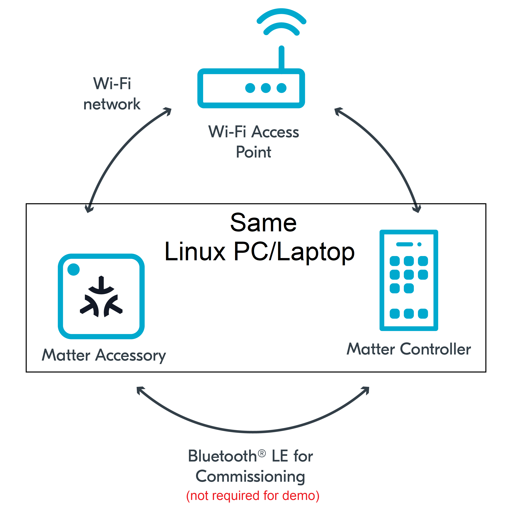

In this codelab we will show you how to build and install the ESP-Matter environment on a Linux based OS.
In this codelab, you will:

Typically, a Matter Accessory will be added to the same Wifi or Thread network as the Matter Controller as part of the "commissioning" process over Bluetooth Low Energy (BLE). However, in this CodeLab we will run the Matter Accessory and the Matter Controller on the same Linux Host. This will allow us to create a simple Matter Network very quickly. In further codelabs, we will learn how to commission Matter devices over BLE.
This set of Codelabs will use Ubuntu 22.04 on a Amd64 based architecture.
You will need
Ubuntu 22.04 (with a Bluetooth interface for later codelabs)The total codelab will take approximately a Duration of 30 minuates to complete.
The official matter github repo is the ConnectedHomeIP repo from Project Chip.
However, Espressif have forked their own version of this repo and have bundled Matter applications and build scripts into a repo called "esp-matter". We will use this version of the Matter SDK for this and future codelabs. This should mean that Espressif will ensure that ESP development and the Matter release versions are compatible.
mkdir ~/Projects
cd ~/Projects
git clone --depth 1 https://github.com/espressif/esp-matter.git
cd esp-matter
git submodule update --init --depth 1
cd ./connectedhomeip/connectedhomeip
./scripts/checkout_submodules.py --platform esp32 linux --shallow
cd ./connectedhomeip/connectedhomeip
./scripts/checkout_submodules.py --platform esp32 darwin --shallow
Note: this process can take a while the very 1st time you install matter.
Before building our Matter controller and sample app, we need to install a few OS specific dependencies.
sudo apt-get install git gcc g++ pkg-config libssl-dev libdbus-1-dev \
libglib2.0-dev libavahi-client-dev ninja-build python3-venv python3-dev \
python3-pip unzip libgirepository1.0-dev libcairo2-dev libreadline-dev
Note: this process can take a while the very 1st time when you install matter.
In this section we will build the matter controller tool that is provided by Project-Chip. The chip-tool is an example application that uses Matter to send messages to a Matter server. It is very useful for experimenting with Matter devices and can help us understand how Matter works.
Run the following script in the esp-matter directory
cd ~/Projects/esp-matter
./install.sh
If everything has gone ok with the environment setup you should see:
Checking the environment:
20250423 16:49:39 INF Environment passes all checks!
Environment looks good, you are ready to go!
Then the install script will build the underlying core chip libraries
In this section we will build a sample matter app that we can use for testing and experimenting. We will use the Linux all-clusters-app which has all the main capabilities of a matter end device.
cd ./connectedhomeip/connectedhomeip
source scripts/activate.sh
./scripts/build/build_examples.py \
--target linux-x64-all-clusters-ipv6only \
build \
&& mv out/linux-x64-all-clusters-ipv6only/chip-all-clusters-app out/host/chip-all-clusters-app \
&& rm -rf out/linux-x64-all-clusters-ipv6only
chip-all-clusters-app and chip-toolin the out/host directorycd out/host
ls -al
Note: if you run the chip-all-clusters-app ensure that you clean up some of the temporary files using rm -rf /tmp/chip* as its a good habit to remove these after every time you test.
In this section we will run a sample matter accessory application (all-clusters-app) and control with an administrative tool called the chip-tool that acts as a matter controller.
Firstly we will check if the CHIP Tool runs correctly. Execute the following command in the connectedhomeip directory:
./out/host/chip-tool
As a result, the CHIP Tool will print all available commands. These are called clusters in this context, but not all listed commands correspond to the clusters in the Data Model (for example, pairing or discover commands).
rm -fr /tmp/chip_*
Note: removing the /tmp/chip* files can sometimes clear up unexpected behaviours.
./out/host/chip-all-clusters-app
You should see output logs and you should pay close attention to the details containing the device information
[1682444491.725740][4142:4142] CHIP:DL: Device Configuration:
[1682444491.725840][4142:4142] CHIP:DL: Serial Number: TEST_SN
[1682444491.725885][4142:4142] CHIP:DL: Vendor Id: 65521 (0xFFF1)
[1682444491.725901][4142:4142] CHIP:DL: Product Id: 32769 (0x8001)
[1682444491.725909][4142:4142] CHIP:DL: Product Name: TEST_PRODUCT
[1682444491.725923][4142:4142] CHIP:DL: Hardware Version: 0
[1682444491.725931][4142:4142] CHIP:DL: Setup Pin Code (0 for UNKNOWN/ERROR): 20202021
[1682444491.725940][4142:4142] CHIP:DL: Setup Discriminator (0xFFFF for UNKNOWN/ERROR): 3840 (0xF00)
[1682444491.725953][4142:4142] CHIP:DL: Manufacturing Date: (not set)
[1682444491.725960][4142:4142] CHIP:DL: Device Type: 65535 (0xFFFF)
[1682444491.725979][4142:4142] CHIP:SVR: SetupQRCode: [MT:-24J042C00KA0648G00]
[1682444491.725992][4142:4142] CHIP:SVR: Copy/paste the below URL in a browser to see the QR Code:
[1682444491.726000][4142:4142] CHIP:SVR: https://project-chip.github.io/connectedhomeip/qrcode.html?data=MT%3A-24J042C00KA0648G00
[1682444491.730420][4142:4142] CHIP:SVR: Manual pairing code: [34970112332]
./out/host/chip-tool discover commissionables
If everything is working you should see output logs and you should see the device information above is successfully discovered by the matter controller
[1682445006.638403][4913:4915] CHIP:DIS: Discovered node:
[1682445006.638461][4913:4915] CHIP:DIS: Hostname: 2A78BBC523530000
[1682445006.638470][4913:4915] CHIP:DIS: IP Address #1: fe80::215:5dff:feb1:bd80
[1682445006.638474][4913:4915] CHIP:DIS: Port: 5540
[1682445006.638507][4913:4915] CHIP:DIS: Mrp Interval idle: not present
[1682445006.638516][4913:4915] CHIP:DIS: Mrp Interval active: not present
[1682445006.638523][4913:4915] CHIP:DIS: TCP Supported: 1
[1682445006.638530][4913:4915] CHIP:DIS: Vendor ID: 65521
[1682445006.638568][4913:4915] CHIP:DIS: Product ID: 32769
[1682445006.638576][4913:4915] CHIP:DIS: Device Type: 65535
[1682445006.638610][4913:4915] CHIP:DIS: Long Discriminator: 3840
[1682445006.638618][4913:4915] CHIP:DIS: Pairing Hint: 33
[1682445006.638625][4913:4915] CHIP:DIS: Instance Name: F7C553DE411295F0
[1682445006.638663][4913:4915] CHIP:DIS: Commissioning Mode: 1
[1682445006.638950][4913:4913] CHIP:CTL: Shutting down the commissioner
./out/host/chip-tool pairing onnetwork-long 1 20202021 3840
If everything is working you should see output logs and you should see that the commissioning was successful
[1682445590.030746][4983:4985] CHIP:CTL: Successfully finished commissioning step 'Cleanup'
[1682445590.030773][4983:4985] CHIP:TOO: Device commissioning completed with success
In the same shell window, we will read the vendor-name of the Matter accessory using the following command:
./out/host/chip-tool basicinformation read vendor-name 1 0
In the output logs, you should see the Vendor Name
[1682445848.220725][5128:5130] CHIP:TOO: VendorName: TEST_VENDOR
./out/host/chip-tool basicinformation read product-name 1 0
./out/host/chip-tool basicinformation read software-version 1 0
We are using the Basic Information cluster. Clusters are logical groupings of Matter functionality.
./out/host/chip-tool generaldiagnostics read up-time 1 0
In the output logs, you should see the UpTime
[1682446010.495854][5286:5288] CHIP:TOO: UpTime: 1008
./out/host/chip-tool
You should stop the chip-all-clusters-app process by using Ctrl-C in the first shell window.
It also a great habit to clean up the temporary files after you finish testing by using this command:
rm -fr /tmp/chip_*
Note: removing the /tmp/chip* files can sometimes clear up unexpected behaviours.
Checkout the official documentation here: Espressif's SDK for Matter
You can also checkout the official Matter SDK documentation here: Project Chip - ConnectedHomeIp